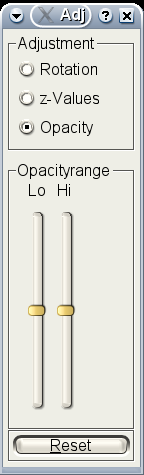

The adjust the image, you can use the Adjust Dialog. To open it either press the button or select Adjust Rendering in the Options menu.
As you can see the dialog has 3 states:
Rotation
In the rotation mode, you can rotate the rendered object. Each of the sliders in the second half of the dialog represents one axis of the coordinate system. By moving a slider you rotate the rendered object.
z-Values
If you activated the z-mapping, you only see values in two thresholds. With the two sliders, you can change these.
If you are in the projection mode, it will automaticly deactivated and a recalculation of the projection is needed. You should also be aware, that the greater the thresholds, the more time it will take to calculate the projection.
Opacity
'vlrender' clips voxel if there value is lower than a value. This value is called the lower Opacity.
Using the sliders for opacity it is possible to gain a better looking images than the image created by the default values. So feel free to play with the sliders.
Only the anatomy data is effected by this values. The zmap remains the same.